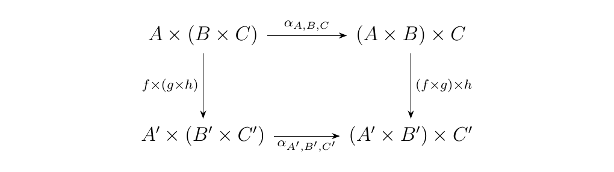
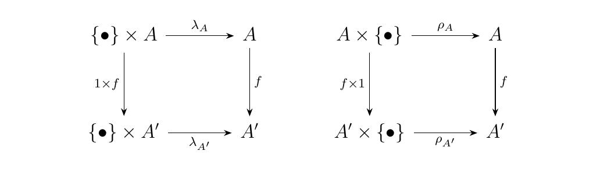
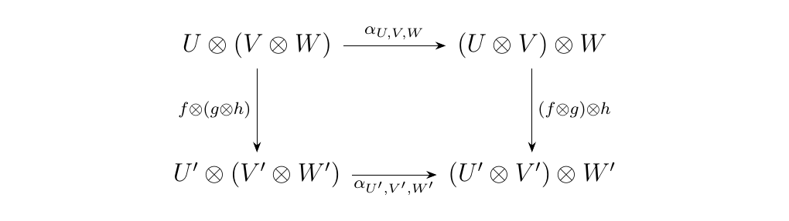
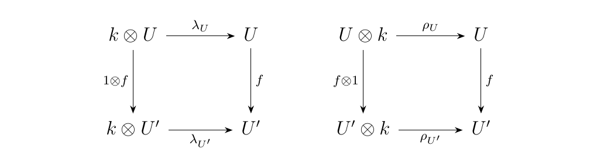
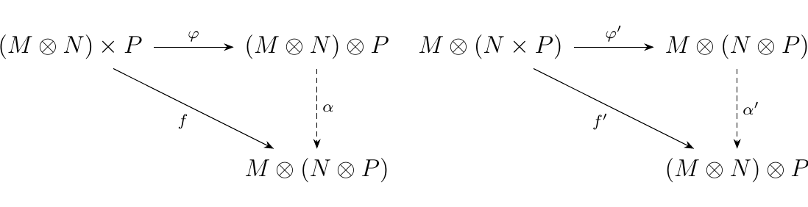
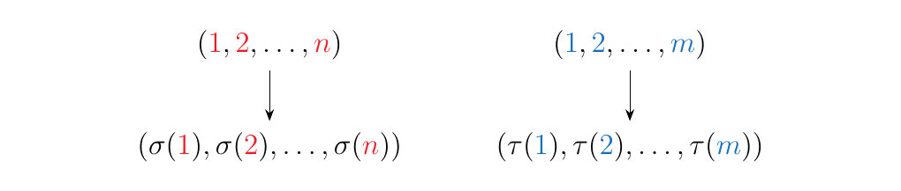
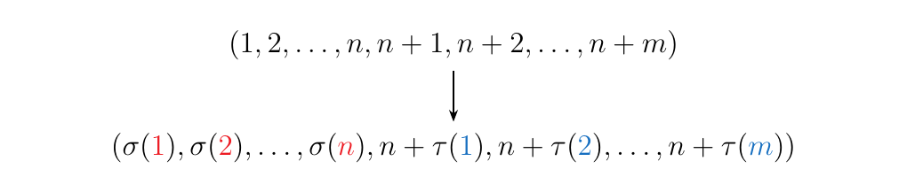
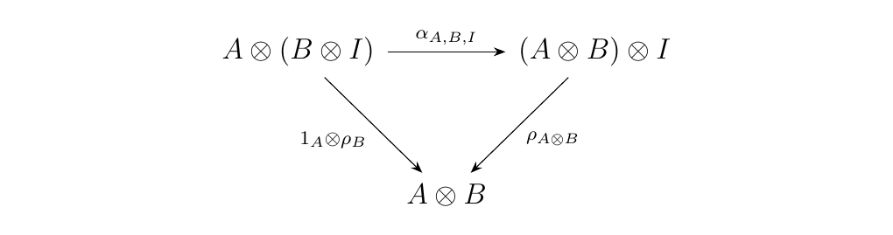
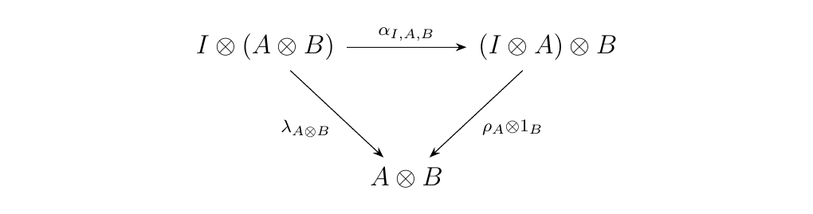

7.1. Monoidal Categories
The concept of a monoidal category is motivated by the very simple observation that some categories are canonically equipped with their own algebraic data which allows us to multiply objects of the category to get new objects. This is similar to how in a group \(G\), we multiply two group elements \(g\), \(h\) to get another group element \(gh \in G\). These types of categories appear frequently enough in many settings that it has been necessary to really understand what the core ingredients of these categories are. The task of defining these categories, however, takes a bit of work. Before we offer the definition and discuss such work we motivate monoidal categories with two key examples.
Consider the category Set. Then for two sets \(A\), \(B\), we can take their cartesian product to create a third set
We also know that given three sets \(A, B, C\), we have an isomorphism \(A \times (B \times C) \cong (A \times B) \times C\). The bijection is given by the function
In addition, there is a particularly special set \(\{\bullet\}\), the one element set. For this set, we know that \(\{\bullet\} \times A \cong A \times \{\bullet\} \cong A\). The bijections are given by
A final observation that is easy to check is that our morphisms \(\alpha_{A, B, C}\), \(\lambda_A\), and \(\rho_A\) are natural. Naturality for \(\alpha\) means that for any three functions \(f: A \to A'\), \(g: B \to B'\), \(h: C \to C'\), the diagram below commutes
 while naturality for \(\lambda\) and \(\rho\) means that for any function \(f: A \to A'\), the diagrams below commute. \  (Here, 1 denotes the identity \(1: \{\bullet\} \to \{\bullet\}\)). While being able to find the functions \(\alpha, \rho, \lambda\) and observing that they are natural may not be surprising in Set, what is surpising is that this behavior continues in many other categories.
Let \(k\) be a field, and consider the category \(**Vect**_k\) of vector spaces over \(k\).
For two vector spaces \(U\), \(V\), we may take their tensor product to create a third
vector space over \(k\). There are many ways to describe \(U \otimes V\); here is
one of them:
Moreover, if \(U\), \(V\) have bases \(\{e_i\}_{i \in I}\), \(\{f_j\}_{j \in J}\), then the basis of \(U \otimes V\) is \(\{e_i \otimes f_j\}_{(i,j) \in I \times J}\).
From linear algebra, we know that \(U \otimes (V \otimes W) \cong (U \otimes V) \otimes W\). To show this, we will define an isomorphic linear transformation \(U \otimes (V \otimes W) \to (U \otimes V) \otimes W\). However, recall that to define such a linear transformation, it suffices to define it on the basis. Thus, let \(W\) have basis \(\{g_{\ell} \}_{\ell \in L}\). Then we define
where on the basis elements
This establishes our desired isomorphism.
In addition, the field \(k\) is trivially a vector space over itself; its basis is the multiplicative identity \(1\). Moreover, we have the isomorphisms \(k \otimes V \cong V \otimes k \cong V\). The isomorphisms are given by the linear transformations
Here, we've defined the two transformations on the bases.
Similarly to our last example, we comment that \(\alpha, \lambda, \rho\) defined here are natural. This means that for any three linear transformations \(f: U \to U'\), \(g: V \to V'\), and \(h: W \to W'\), the diagram below commutes \  and we additionally have that the diagrams below commute. \  end{example}
The observations we have made here continue to be true upon investigating many other categories \(\cc\) in which we have some known, natural way of combining elements. In each case, the story is the same. The key ingredients are:
-
There is some product \(\otimes: \cc \times \cc \to \cc\) (specifically, it is a bifunctor)
-
For all \(A, B, C \in \cc\), there is a natural isomorphism
- There is a special object \(I\) of \(\cc\) such that, for any object \(A\), we have the natural isomorphisms
The fact that we keep seeing these patterns in many categories is what motivates the following definition.
A monoidal category \(\cc = (\cc, \otimes, I)\) is a category \(\cc\) equipped with a bifunctor \(\otimes: \cc \times \cc \to \cc\), a (special) object \(I\), and three natural isomorphisms \begin{statement}{ProcessBlue!10}
\end{statement}
such that the following coherence conditions hold.
\begin{statement}{ProcessBlue!10}
\begin{equation}
\begin{tikzcd}[column sep = 0.1cm, row sep = 1cm]
A \otimes(I \otimes B)
\arrow[rr, "\alpha_{A, I, B}"]
\arrow[dr, swap, "1_A\otimes \lambda_{B}"]
& &
(A \otimes I)\otimes B
\arrow[dl, "\rho_{A} \otimes 1_B"]
\
& A \otimes B &
\end{tikzcd}
\end{equation}
\begin{equation}
\begin{tikzcd}[column sep = 1.8cm, row sep = 1.6cm]
A\otimes (B \otimes (C \otimes D))
\arrow[r, "\alpha_{A,B,C\otimes D}"]
\arrow[d, swap, "1_A\otimes \alpha_{B, C, D}"]
&
(A \otimes B)\otimes(C\otimes D)
\arrow[r, "\alpha_{A\otimes B, C, D}"]
&
((A \otimes B)\otimes C)\otimes D\
A\otimes((B\otimes C)\otimes D)
\arrow[rr, swap, "\alpha_{A, B\otimes C, D}"]
&&
(A \otimes(B\otimes C))\otimes D
\arrow[u, swap, "\alpha_{A, B, C}\otimes 1_D"]
\end{tikzcd}
\end{equation}
\end{statement}
We also define some terminology within this definition.
-
We call the bifunctor \(\otimes\) the monoidal product
-
We refer to \(I\) as the identity object
-
We refer to diagram \ref{triangle_diag_1} as the unit diagram and diagram \ref{pentagonal_diag} as the pentagon diagram.
Further, we say a strict monoidal category is one in which the associator, left unit and right unit are all identities.
The reader should be wondering: What are those "coherence conditions"? The short answer is that we need the coherence conditions in order for our ideas to make any logical sense. While that answer is very vague and unsatisfying, we are not quite yet ready to fully explain why those two diagrams are necessary. We will however say
-
The reader is definitely not expected at this moment to understand why those diagrams are necessary.
-
We will eventually explain why those diagrams are necessary.
Before we explain why the diagrams are necessary, we develop further intuition regarding monoidal categories with some more examples.
\begin{example} As one might expect, \((**Set**, \times, \{\bullet\})\) is a monoidal category. We have verified most of the details except the coherence conditions, but it is not too difficult to show that the unit and pentagon diagram commute in Set.
However, we can put another monoidal category structure on Set with the following data:
-
We let the disjoint union bifunctor \((-)\coprod (-): **Set**\times **Set** \to **Set**\) be our monoidal product.
-
We let the empty set \(\varnothing\) be our identity object.
With these settings, we can define natural isomorphisms for any three sets \(X, Y, Z\)
-
\(\alpha_{X, Y, Z}: X \amalg (Y \amalg Z) \isomarrow (X \amalg Y) \amalg Z\)
-
\(\lambda_X: \varnothing \amalg X \isomarrow X\)
-
\(\rho_X: X \amalg \varnothing \isomarrow X\)
in the obvious way, and check that the required diagrams commute. In this way, we have that \((**Set**, \amalg, \varnothing)\) is also a monoidal category.
The previous example demonstrates that a given category can have more than one monoidal structure on it. This is analagous to the fact that sometimes one can put two different group structures on an underlying set.
The previous example may also make us wonder if we can generalize our logic to consider other categories in which finite products and coproducts exist. The answer is yes, and this gives us many examples of monoidal categories:
-
\((**Top**, \times, \{\bullet\})\)
-
\((**Ab**, \oplus, \{e\})\)
-
\((\text{R}**-Mod**, \times, \{0\})\)
If \(\cc\) is a category with finite products and a terminal object \(T\), then \((\cc, \times, T)\) is a monoiodal category. We refer to this type of monoidal category as a cartesian monoidal category.
Dually, if it has finite coproducts and an initial object \(I\), then \((\cc, \amalg, I)\) is also a monoidal category. We call this type of monoidal category a cocartesian monoidal category.
We now introduce less obvious, but useful examples of monoidal categories.
Let \(R\) be a commutative ring. Then the category of all \(R\)-modules, (\(R\)-Mod, \(\otimes\), \(\{0\}\)), forms a monoidal category under the tensor product. Recall that the tensor product between two \(R\)-modules \(N \otimes M\) is an initial object in the comma category \((N \times M \downarrow R**-Mod**\) where the morphisms are bilinear. Alternatively in diagrams, we have that \ Now consider a third \(R\)-module \(P\); then we have two ways of constructing the tensor product. To demonstrate that we may identify these objects up to isomorphism, construct the maps
and
These maps are bilinear due to the bilinearity of \(\otimes\). Hence we see that the universal property of the tensor product gives us unique map \(\alpha\) and \(\alpha'\) such that the diagrams below commute. \  Based on how we defined \(f\) and \(f'\), and since we know that \(\phi\) and \(\phi'\) is, we can determine that \(\alpha\) and \(\alpha'\) are "shift maps", i.e,
Hence we see that \(\alpha\) and \(\alpha'\) are inverses, so what we have is an associator:
Now consider the trivial \(R\)-module, denoted \(I = \{0\}\). For any \(R\)-module \(M\) we have evident maps
which provide isomorphisms, so that we have left and right associators
Finally, the triangular and pentagonal diagrams are commutative since shifting the tensor product on individual elements does not change (up to isomorphism) the value of the overall elements.
Consider the category \(**GrMod**_R\) which consist of graded \(R\)-modules \(M = \{M_n\}_{n =1}^{\infty}\) Then this forms a monoidal category \((**GrMod**_R, \otimes, I)\) where \(I = \{(0)_n\}_{n=1}^{\infty}\) is the trivial graded \(R\)-module and where we define the monoidal product as \(M \otimes N = \{(M \otimes N)_n\}_{n=1}^{\infty}\) where
To show this monoidal, the first thing we must check is that we have an associator. Towards this goal, consider three graded \(R\)-modules \(M = \{M_n\}_{n = 1}^{\infty}\), \(N = \{N_n\}_{n = 1}^{\infty}\) and \(P = \{P_n\}_{n = 1}^{\infty}\). Then the \(m\)-th graded module of \(M \otimes (N \otimes P)\) is
where in the third step we used the fact that the tensor product commutes with direct sums and in the fourth step we used the canonical associator regarding the tensor products of three element. Thus we see that we have an associator
which as a graded module homomorphism, acts on each level as
where in each coordinate of the direct sums we apply an instance of the associator \(\alpha'\) between the tensor product of three \(R\)-modules. The naturality of this associator is inherited from \(\alpha'\). In addition, we have natural left and right unitors
where on each level we utilize the natural left and right unitors for non-graded \(R\)-modules.
Let \((M, \otimes, I, \alpha, \rho, \lambda)\) be a monoidal category, \(\cc\) any other category. Then the functor category \(\cc^M\) is a monoidal category. We treat the constant functor \(I: \cc \to M\) where
as the identity element, and we can define a tensor product on this category as follows: on objects \(F, G: \cc \to M\), we define \(F\boxtimes G\) as the composite
which can be stated pointwise as \((F\boxtimes G)(C) = F(C)\otimes G(C)\). On morphisms, we have that if \(\eta: F_1 \to F_2\) and \(\eta': G_1 \to G_2\) are natural transformations, then we say \(\eta \boxtimes \eta': F_1\boxtimes G_1 \to F_2 \boxtimes G_2\) is a natural transformation, where we define
Note that such a natural transformation is well-defined as the diagram below commutes
since \(\otimes: M \times M \to M\) is a bifunctor. Finally, for functors \(F, G, H: \cc \to M\) define the associator \(\alpha'_{F, G, H}: F\boxtimes(G\boxtimes H) \isomarrow (F\boxtimes (G \boxtimes H))\) as the natural transformation where for each object \(A\)
and the unitors \(\lambda'_F: I\boxtimes F \to F\) and \(\rho'_F: F \boxtimes I \to F\) as the natural transformations where for each object \(A\)
One can then show that these together satisfy the pentagon and unit axioms.
Consider the category \(\mathbb{P}\) whose objects are the natural numbers (with 0 included) and whose morphisms are the symmetric groups \(S_n\). That is, \begin{description} \item[Objects.] The objects are \(n = 0, 1,2, \dots\). \item[Morphisms.] For any objects \(n,m\) we have that
\end{description} Note that there are many ways of constructing this category; we just present the simplest. In general terms this is the countable disjoint union of the symmetric groups. Even more generally, this can be done for any family of groups (or rings, monoids, semigroups).
What is interesting about this category is that it intuitively forms a strict monoidal category. That is, we can formulate a bifunctor \(+:\mathbb{P}\times \mathbb{P} \to \mathbb{P}\) on objects as addition of natural numbers and on morphisms as
where \(\sigma \in S_n\) and \(\tau \in S_m\) and where \(\sigma \otimes \tau\) denotes the direct sum permutation. I could tell you in esoteric language and notation what that is, or I could just show you: \(\sigma\) and \(\tau\), displayed as below \  become \(\sigma \otimes \tau\) which is displayed as below. \  To make this monoidal, we specify that \(0\) is our identity element whose associated identity morphism is the empty permutation. Now clearly this operation is strict on objects. On morphisms, it is also strict in the same way that stacking three Lego pieces together in the two possible different ways are equivalent. Hence the associators and unitors are all identities and this forms a strict monoidal category.
Let \(\cc\) be a category equipped with natural isomorphisms
for all objects \(A, B, C \in \cc\) and some identity object \(I\). Suppose the pentagonal diagram \ref{pentagonal_diag} holds for all objects of \(\cc\). Then for all \(A, B \in \cc\), the diagram \ commutes if and only if the diagram \  commutes, which commutes if and only if the diagram \  commutes.
\textcolor{NavyBlue}{This ultimately tells us that the definition of a monoidal category is not unique.} That is, there are two different yet exactly equivalent ways in which we could have defined a monoidal category.
Thus what we see is that the definition of a monoidal category is very vast, and asks for a lot. Moreover, we've shown that there are different coherence conditions we could have imposed (the pentagonal diagram being the same), but they amount to stating the same thing.